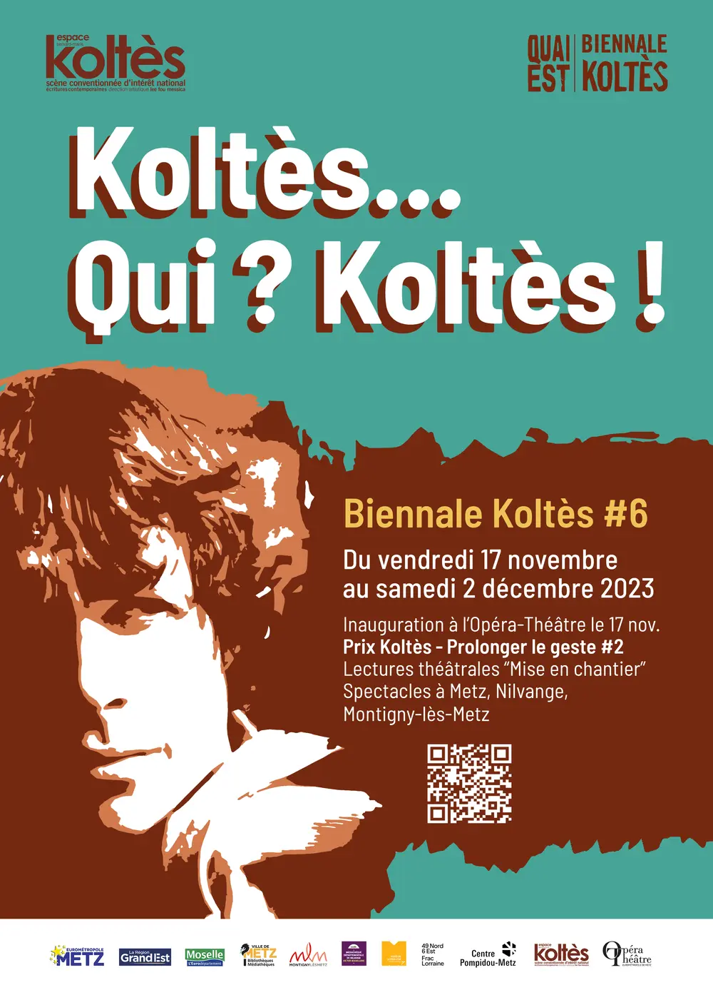
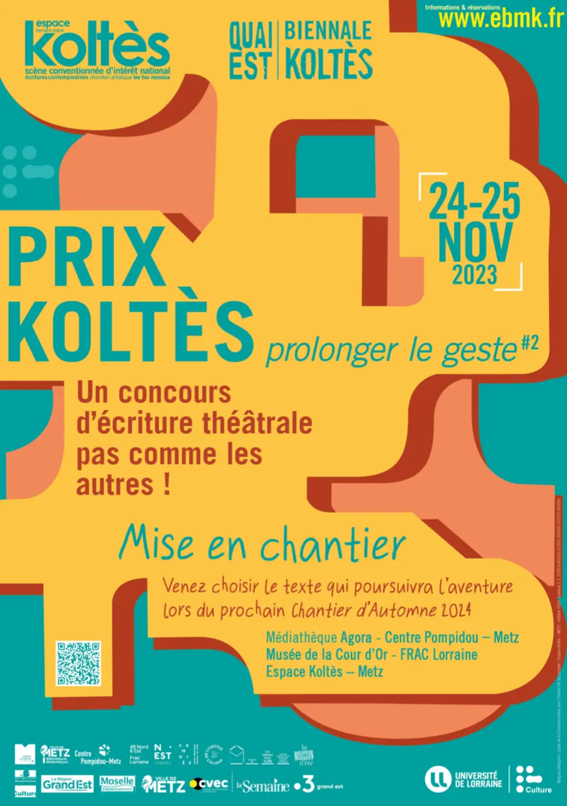

« Qui ? Koltès ! » : la 6e Biennale, du 17 novembre au 2 décembre 2023, pose la question de l’auteur autant que de ses héritiers.
Inaugurée à l’Opéra-Théâtre de Metz, l’édition a réuni le Théâtre Bernard-Marie Koltès (alors Espace Bernard-Marie Koltès), l’Opéra-Théâtre, des médiathèques, le musée de la Cour d’Or, le Centre Pompidou-Metz, le FRAC Lorraine et la salle Europa de Montigny-lès-Metz. Elle a accueilli la création de la pièce lauréate du premier Prix Koltès et le marathon de lectures du deuxième.
La même année, le Prix Koltès « Prolonger le geste » #2 s’est conclu les 24 et 25 novembre : voir ci-dessous.


Programme
- Ven 17
nov.20 hOpéra-Théâtre de l’Eurométropole de MetzSoirée inaugurale — rencontre-événement
Soirée animée par Gaël Leveugle. Autour de la table : Florence Bernard (maîtresse de conférences, directrice du Dictionnaire Bernard-Marie Koltès), les comédiens Yves Ferry et Moni Grego, compagnons de route de Koltès, Massimo Riggi et Alexandre Horréard, lauréat du 1er Prix. Ouverture avec les premières minutes de Dans la solitude des champs de coton par Massimo Riggi ; final par les élèves-acteurs du Conservatoire de Metz (mise en espace de Vincent Goethals). Librairie éphémère Autour du Monde.
- 22 → 24
nov.22 nov. 20 h · 23 nov. 10 h et 18 h · 24 nov. 14 hThéâtre Bernard-Marie Koltès« Utopie\Viande » — création
Création de la pièce lauréate du 1er Prix Koltès : texte et mise en scène d’Alexandre Horréard, avec Philippe Frécon, Clémence Josseau, Cindy Vincent et Renaud Truffault. Production Requin Baleine, coproduction avec l’Espace BMK, Quai Est – Biennale Koltès, le Nest et L’Étoile du Nord.
- Ven 24
nov.14 h · 16 h · 18 h · 20 hMetz · Agora, Centre Pompidou-Metz, Musée de la Cour d’Or, FRAC LorraineMarathon de lectures — sortie de chantier
Lectures de deux textes issus du Prix Koltès #2, avec choix du texte préféré par le public. Entrée et placement libres.
- Sam 25
nov.15 h → 18 hThéâtre Bernard-Marie KoltèsMarathon de lectures — suite et remise des prix
Reprise des lectures à l’Espace Koltès, avec vote du public et remise du Prix du jury et du Prix du public.
- Ven 1er
déc.10 h · 14 hHors les murs · Médiathèque Victor Madelaine, Nilvange« Je me souviens… » et « Tabataba »
Un spectacle de José Pereira avec son atelier poésie-théâtre, puis Tabataba de Koltès, mis en scène par Stanislas Nordey (Théâtre national de Strasbourg) avec Jisca Kalvanda et Émile-Samory Fofana. Entrée libre, dans le cadre du travail de la Biennale avec les collèges du Département.
- Sam 2
déc.20 hSalle Europa, Montigny-lès-MetzSoirée de clôture : « Les Éveillés » et « Tabataba »
« Les Éveillés » de Suzie Colin, écrit dans le cadre du concours du Prix Koltès, interprété par quatre diplômés du Conservatoire de Metz : il prolonge la vie de Borny et Plantières, deux personnages secondaires du Retour au désert. Puis Tabataba, en entrée et placement libres.
Le Prix Koltès, deuxième édition
Cent jours pour écrire une fiction dramatique qui entre en résonance avec une phrase tirée d’une pièce de Koltès. Le concours évolue vers davantage d’accompagnement et de soutien aux jeunes auteurs d’aujourd’hui. Parrain : Arnaud Maïsetti, auteur et enseignant-chercheur à l’Université d’Aix-Marseille. Président du jury : François Koltès.
Calendrier
- Dépôt des textes : jusqu’au samedi 24 septembre 2022, 23 h 59
- Présélection n°1 : 31 décembre 2022 (jury de lecteurs)
- Présélection n°2 : 15 mai 2023 (jury d’étudiants de l’Université de Lorraine)
- Sélection par le jury de professionnels : 4 octobre 2023
- Marathon de lectures et remise des prix : 24 et 25 novembre 2023
Les trois prix
- Les quatre lauréats du premier tour : une mise en voix de leur texte par les artistes-directeurs des Centres dramatiques nationaux du Grand Est.
- Prix du public : un « chantier d’automne » avec présentation d’une maquette, en lien avec La Mousson d’Automne et le Nest – CDN de Thionville.
- Prix du jury : une prime d’écriture de 3 000 € et une aide au montage de 15 000 € pour la compagnie qui créera le spectacle.
Titres des textes et noms des lauréats 2023 : à reprendre depuis le dossier de presse de l’édition ou le site du Théâtre Bernard-Marie Koltès.
